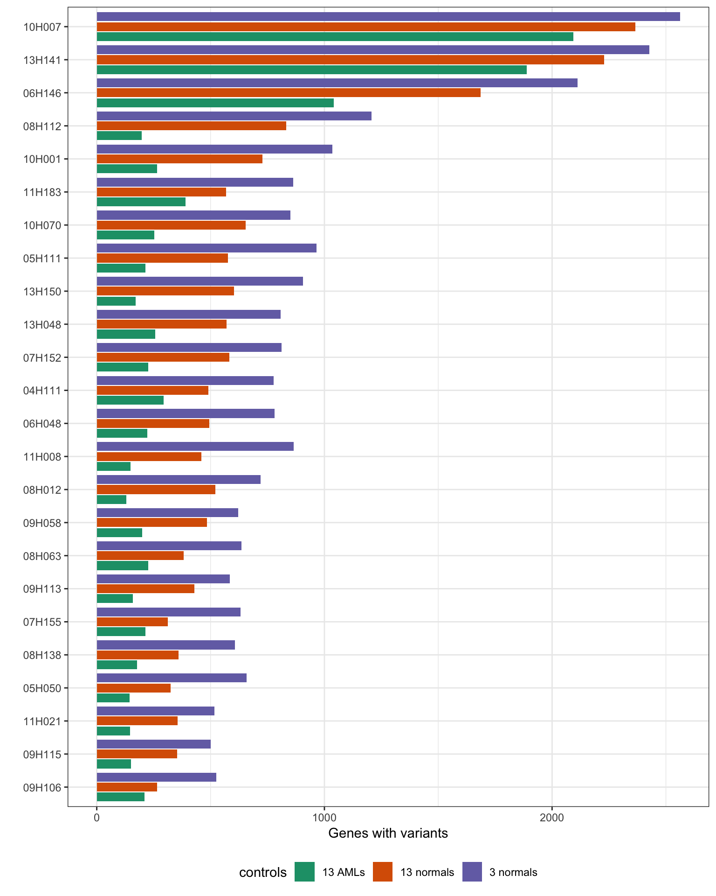

Last updated: 2020-05-07
Checks: 7 0
Knit directory: MINTIE-paper-analysis/
This reproducible R Markdown analysis was created with workflowr (version 1.6.1). The Checks tab describes the reproducibility checks that were applied when the results were created. The Past versions tab lists the development history.
Great! Since the R Markdown file has been committed to the Git repository, you know the exact version of the code that produced these results.
Great job! The global environment was empty. Objects defined in the global environment can affect the analysis in your R Markdown file in unknown ways. For reproduciblity it’s best to always run the code in an empty environment.
The command set.seed(20200415) was run prior to running the code in the R Markdown file. Setting a seed ensures that any results that rely on randomness, e.g. subsampling or permutations, are reproducible.
Great job! Recording the operating system, R version, and package versions is critical for reproducibility.
Nice! There were no cached chunks for this analysis, so you can be confident that you successfully produced the results during this run.
Great job! Using relative paths to the files within your workflowr project makes it easier to run your code on other machines.
Great! You are using Git for version control. Tracking code development and connecting the code version to the results is critical for reproducibility.
The results in this page were generated with repository version d8d5b96. See the Past versions tab to see a history of the changes made to the R Markdown and HTML files.
Note that you need to be careful to ensure that all relevant files for the analysis have been committed to Git prior to generating the results (you can use wflow_publish or wflow_git_commit). workflowr only checks the R Markdown file, but you know if there are other scripts or data files that it depends on. Below is the status of the Git repository when the results were generated:
Ignored files:
Ignored: .DS_Store
Ignored: .Rhistory
Ignored: .Rproj.user/
Ignored: analysis/.DS_Store
Ignored: analysis/cache/
Ignored: data/.DS_Store
Ignored: data/leucegene/.DS_Store
Ignored: data/leucegene/KMT2A-PTD_results/.DS_Store
Ignored: data/leucegene/normals_controls_test_results/.DS_Store
Ignored: data/leucegene/salmon_out/
Ignored: data/leucegene/sample_info/KMT2A-PTD_8-2.fa.xls
Ignored: data/simu/.DS_Store
Ignored: output/Leucegene_gene_counts.tsv
Unstaged changes:
Modified: analysis/_site.yml
Note that any generated files, e.g. HTML, png, CSS, etc., are not included in this status report because it is ok for generated content to have uncommitted changes.
These are the previous versions of the repository in which changes were made to the R Markdown (analysis/Leucegene_Validation.Rmd) and HTML (docs/Leucegene_Validation.html) files. If you’ve configured a remote Git repository (see ?wflow_git_remote), click on the hyperlinks in the table below to view the files as they were in that past version.
| File | Version | Author | Date | Message |
|---|---|---|---|---|
| Rmd | d8d5b96 | Marek Cmero | 2020-05-07 | Added Leucegene variant validation |
| html | 90c7fd9 | Marek Cmero | 2020-05-06 | Build site. |
| Rmd | 44d8c37 | Marek Cmero | 2020-05-06 | Build leucegene validation notebook. |
| Rmd | ff4b1dc | Marek Cmero | 2020-05-06 | Leucegene results |
# util
library(data.table)
library(dplyr)
library(here)
library(stringr)
# plotting
library(ggplot2)
# bioinformatics/stats helpers
library(edgeR)options(stringsAsFactors = FALSE)source(here("code/leucegene_helper.R"))# load SRX to patient ID lookup table
kmt2a_patient_lookup <- read.delim(here("data/leucegene/sample_info/KMT2A-PTD_samples.txt"),
header = FALSE,
col.names = c("sample", "patient"))
kmt2a_results_dir <- here("data/leucegene/KMT2A-PTD_results")
# load KMT2A cohort comparisons against all other controls
kmt2a_results <- NULL
control_sets <- list.files(kmt2a_results_dir)
for (controls in control_sets) {
tmp <- str_c(kmt2a_results_dir, controls, sep = "/") %>%
list.files(., full.names = TRUE) %>%
lapply(., read.delim) %>%
rbindlist() %>%
filter(logFC > 5) %>%
mutate(controls = controls)
kmt2a_results <- rbind(kmt2a_results, tmp)
}
kmt2a_results <- inner_join(kmt2a_results, kmt2a_patient_lookup, by = "sample")
# load other validation reults and truth table
truth <- read.delim(here("data/leucegene/sample_info/variant_validation_table.tsv"), sep = "\t")
leucegene_results_dir <- here("data/leucegene/validation_results")
validation <- list.files(leucegene_results_dir, full.names = TRUE) %>%
lapply(., read.delim) %>%
rbindlist() %>%
filter(logFC > 5)MINTIE paper Supplementary Figure 2. Shows the number of variant genes found in the Leucegene cohort containing KMT2A PTDs.
# extract variant genes and make summary
var_genes <- kmt2a_results$overlapping_genes %>%
str_split("\\||:")
repeat_rows <- rep(1:nrow(kmt2a_results), sapply(var_genes, length))
results_by_gene <- data.table(kmt2a_results[repeat_rows,])
results_by_gene$gene <- unlist(var_genes)
results_summary <- results_by_gene[, length(unique(gene)), by = c("patient", "controls")]
results_summary <- results_summary %>% arrange(controls, V1) %>% data.table()
results_summary$patient <- factor(results_summary$patient,
levels = unique(results_summary$patient))
# reorder by totals across different controls
results_totals <- results_summary[, sum(V1), by = c("controls")] %>%
arrange(V1)
results_summary$controls <- factor(results_summary$controls,
levels = results_totals$controls)
print("Total variant genes called using different controls:")[1] "Total variant genes called using different controls:"results_summary %>%
group_by(controls) %>%
summarise(min = min(V1), median = median(V1), max = max(V1)) %>%
data.frame() %>%
print() controls min median max
1 AML_controls 129 213.5 2093
2 normal_controls 266 508.0 2365
3 normal_controls_reduced 501 794.0 2562ggplot(results_summary, aes(patient, V1, fill=controls)) +
geom_bar(position = position_dodge2(width =0.9, preserve = "single"), stat = "identity") +
theme_bw() +
xlab("") +
ylab("Genes with variants") +
coord_flip() +
theme(legend.position = "bottom") +
scale_fill_brewer(palette="Dark2",
labels = c("AML_controls" = "13 AMLs",
"normal_controls" = "13 normals",
"normal_controls_reduced" = "3 normals"))
| Version | Author | Date |
|---|---|---|
| 90c7fd9 | Marek Cmero | 2020-05-06 |
MINTIE paper Supplementary Table 1. Shows whether MINITE found a KMT2A SV in each sample for the given control group. Coverage obtained from Audemard et al. spreadsheet containing the Leucegene results must be manually added to data/leucegene/sample_info to run the code.
# load results from km paper for coverage of KMT2A PTDs
kmt2a_lgene_km_results <- read.csv(here("data/leucegene/sample_info/KMT2A-PTD_8-2.fa.xls"), sep="\t") %>%
mutate(patient = Sample) %>%
group_by(patient) %>%
summarise(coverage = max(Min.coverage))
# check whether MINTIE found a KMT2A SV in each control set
found_using_cancon <- get_samples_with_kmt2a_sv(kmt2a_results, "AML_controls")
found_using_norcon <- get_samples_with_kmt2a_sv(kmt2a_results, "normal_controls")
found_using_redcon <- get_samples_with_kmt2a_sv(kmt2a_results, "normal_controls_reduced")
# make the table
kmt2a_control_comp <- inner_join(kmt2a_patient_lookup, kmt2a_lgene_km_results, by = "patient") %>%
arrange(desc(coverage))
kmt2a_control_comp$`13_AMLs` <- kmt2a_control_comp$sample %in% found_using_cancon
kmt2a_control_comp$`13_normals` <- kmt2a_control_comp$sample %in% found_using_norcon
kmt2a_control_comp$`3_normals` <- kmt2a_control_comp$sample %in% found_using_redcon
print(kmt2a_control_comp) sample patient coverage 13_AMLs 13_normals 3_normals
1 SRX958906 07H152 158 TRUE TRUE TRUE
2 SRX332646 09H115 125 TRUE TRUE TRUE
3 SRX957230 06H146 87 TRUE TRUE TRUE
4 SRX957223 05H111 79 TRUE TRUE TRUE
5 SRX332659 11H021 63 TRUE TRUE TRUE
6 SRX332633 05H050 58 TRUE TRUE TRUE
7 SRX959061 13H150 58 TRUE TRUE TRUE
8 SRX959044 13H048 57 TRUE TRUE TRUE
9 SRX958974 10H070 53 TRUE TRUE TRUE
10 SRX958963 10H007 50 TRUE TRUE TRUE
11 SRX958959 09H106 49 TRUE TRUE TRUE
12 SRX959060 13H141 45 TRUE TRUE TRUE
13 SRX958945 09H058 29 TRUE TRUE TRUE
14 SRX958907 07H155 23 TRUE TRUE TRUE
15 SRX381854 08H112 22 TRUE TRUE TRUE
16 SRX332645 09H113 17 TRUE TRUE TRUE
17 SRX959001 11H183 16 FALSE FALSE FALSE
18 SRX381852 08H012 15 FALSE FALSE FALSE
19 SRX958932 08H138 15 FALSE FALSE FALSE
20 SRX381865 11H008 13 FALSE FALSE FALSE
21 SRX958873 06H048 10 FALSE FALSE FALSE
22 SRX958922 08H063 6 FALSE FALSE FALSE
23 SRX958961 10H001 6 FALSE FALSE FALSE
24 SRX958844 04H111 3 FALSE FALSE FALSE# add KMT2A results against AML controls as validation
validation <- filter(kmt2a_results, controls == "AML_controls") %>%
select(-c(controls, patient)) %>%
rbind(., validation)
rowwise(truth) %>%
mutate(found = is_variant_in_sample(Experiment, gene1, gene2, variant, validation)) %>%
data.frame() %>%
print() patient_ID Experiment gene1 gene2 variant cohort found
1 03H065 SRX729615 RUNX11 RUNX1T1 fusion CBF TRUE
2 03H083 SRX729616 RUNX11 RUNX1T1 fusion CBF TRUE
3 03H095 SRX729602 CBFB MYH11 fusion CBF TRUE
4 03H109 SRX729580 CBFB MYH11 fusion CBF TRUE
5 03H112 SRX729581 CBFB MYH11 fusion CBF TRUE
6 03H112 SRX729581 FLT3 ITD CBF TRUE
7 04H030 SRX729603 CBFB MYH11 fusion CBF TRUE
8 04H061 SRX729582 CBFB MYH11 fusion CBF TRUE
9 04H091 SRX729583 CBFB MYH11 fusion CBF TRUE
10 05H042 SRX729617 RUNX11 RUNX1T1 fusion CBF TRUE
11 05H099 SRX958862 CBFB MYH11 fusion CBF TRUE
12 05H113 SRX729604 CBFB MYH11 fusion CBF TRUE
13 05H118 SRX729618 RUNX11 RUNX1T1 fusion CBF TRUE
14 05H136 SRX729605 CBFB MYH11 fusion CBF TRUE
15 05H184 SRX729619 RUNX11 RUNX1T1 fusion CBF TRUE
16 06H020 SRX729606 CBFB MYH11 fusion CBF TRUE
17 06H035 SRX729620 RUNX11 RUNX1T1 fusion CBF TRUE
18 06H115 SRX729607 CBFB MYH11 fusion CBF TRUE
19 07H099 SRX381851 CBFB MYH11 fusion CBF TRUE
20 07H137 SRX729621 RUNX11 RUNX1T1 fusion CBF TRUE
21 07H144 SRX729585 CBFB MYH11 fusion CBF TRUE
22 08H034 SRX729622 RUNX11 RUNX1T1 fusion CBF TRUE
23 08H042 SRX729623 RUNX11 RUNX1T1 fusion CBF TRUE
24 08H072 SRX729624 RUNX11 RUNX1T1 fusion CBF TRUE
25 08H072 SRX729624 FLT3 ITD CBF TRUE
26 08H081 SRX729586 CBFB MYH11 fusion CBF TRUE
27 08H099 SRX729608 CBFB MYH11 fusion CBF TRUE
28 09H016 SRX729587 CBFB MYH11 fusion CBF FALSE
29 09H040 SRX729625 RUNX11 RUNX1T1 fusion CBF TRUE
30 09H066 SRX729588 CBFB MYH11 fusion CBF TRUE
31 10H008 SRX729609 CBFB MYH11 fusion CBF TRUE
32 10H030 SRX729626 RUNX11 RUNX1T1 fusion CBF TRUE
33 10H119 SRX729627 RUNX11 RUNX1T1 fusion CBF TRUE
34 11H022 SRX729610 CBFB MYH11 fusion CBF TRUE
35 11H022 SRX729610 FLT3 ITD CBF FALSE
36 11H104 SRX729589 CBFB MYH11 fusion CBF TRUE
37 11H107 SRX729628 RUNX11 RUNX1T1 fusion CBF TRUE
38 11H179 SRX729611 CBFB MYH11 fusion CBF TRUE
39 12H042 SRX729590 CBFB MYH11 fusion CBF FALSE
40 12H044 SRX729591 CBFB MYH11 fusion CBF TRUE
41 12H045 SRX729629 RUNX11 RUNX1T1 fusion CBF TRUE
42 12H098 SRX729630 RUNX11 RUNX1T1 fusion CBF TRUE
43 12H165 SRX729592 CBFB MYH11 fusion CBF TRUE
44 12H166 SRX729631 RUNX11 RUNX1T1 fusion CBF TRUE
45 12H180 SRX729632 RUNX11 RUNX1T1 fusion CBF TRUE
46 12H183 SRX729633 RUNX11 RUNX1T1 fusion CBF TRUE
47 13H066 SRX729612 CBFB MYH11 fusion CBF TRUE
48 13H120 SRX959058 CBFB MYH11 fusion CBF TRUE
49 13H169 SRX959064 RUNX11 RUNX1T1 fusion CBF FALSE
50 04H111 SRX958844 KMT2A PTD KMT2A-PTD FALSE
51 05H050 SRX332633 KMT2A PTD KMT2A-PTD TRUE
52 05H111 SRX957223 KMT2A PTD KMT2A-PTD TRUE
53 06H048 SRX958873 KMT2A PTD KMT2A-PTD FALSE
54 06H146 SRX957230 KMT2A PTD KMT2A-PTD TRUE
55 07H152 SRX958906 KMT2A PTD KMT2A-PTD FALSE
56 07H155 SRX958907 KMT2A PTD KMT2A-PTD FALSE
57 08H012 SRX381852 KMT2A PTD KMT2A-PTD FALSE
58 08H063 SRX958922 KMT2A PTD KMT2A-PTD FALSE
59 08H112 SRX381854 KMT2A PTD KMT2A-PTD TRUE
60 08H138 SRX958932 KMT2A PTD KMT2A-PTD FALSE
61 09H058 SRX958945 KMT2A PTD KMT2A-PTD TRUE
62 09H106 SRX958959 KMT2A PTD KMT2A-PTD TRUE
63 09H113 SRX332645 KMT2A PTD KMT2A-PTD TRUE
64 09H115 SRX332646 KMT2A PTD KMT2A-PTD FALSE
65 10H001 SRX958961 KMT2A PTD KMT2A-PTD FALSE
66 10H007 SRX958963 KMT2A PTD KMT2A-PTD TRUE
67 10H070 SRX958974 KMT2A PTD KMT2A-PTD TRUE
68 11H008 SRX381865 KMT2A PTD KMT2A-PTD FALSE
69 11H021 SRX332659 KMT2A PTD KMT2A-PTD FALSE
70 11H183 SRX959001 KMT2A PTD KMT2A-PTD FALSE
71 13H048 SRX959044 KMT2A PTD KMT2A-PTD TRUE
72 13H141 SRX959060 KMT2A PTD KMT2A-PTD TRUE
73 13H150 SRX959061 KMT2A PTD KMT2A-PTD FALSE
74 03H041 SRX332627 NUP98 NSD1 fusion NUP98-NSD1 TRUE
75 03H041 SRX332627 FLT3 ITD NUP98-NSD1 TRUE
76 05H034 SRX958856 NUP98 NSD1 fusion NUP98-NSD1 TRUE
77 05H163 SRX332635 NUP98 NSD1 fusion NUP98-NSD1 TRUE
78 08H049 SRX958915 NUP98 NSD1 fusion NUP98-NSD1 TRUE
79 08H049 SRX958915 FLT3 ITD NUP98-NSD1 TRUE
80 10H038 SRX381861 NUP98 NSD1 fusion NUP98-NSD1 TRUE
81 11H027 SRX958987 NUP98 NSD1 fusion NUP98-NSD1 TRUE
82 11H027 SRX958987 FLT3 ITD NUP98-NSD1 TRUE
83 11H160 SRX332667 NUP98 NSD1 fusion NUP98-NSD1 TRUE
84 11H160 SRX332667 FLT3 ITD NUP98-NSD1 TRUE
sessionInfo()R version 3.5.1 (2018-07-02)
Platform: x86_64-apple-darwin15.6.0 (64-bit)
Running under: macOS 10.14.6
Matrix products: default
BLAS: /Library/Frameworks/R.framework/Versions/3.5/Resources/lib/libRblas.0.dylib
LAPACK: /Library/Frameworks/R.framework/Versions/3.5/Resources/lib/libRlapack.dylib
locale:
[1] en_AU.UTF-8/en_AU.UTF-8/en_AU.UTF-8/C/en_AU.UTF-8/en_AU.UTF-8
attached base packages:
[1] stats graphics grDevices utils datasets methods base
other attached packages:
[1] edgeR_3.24.3 limma_3.38.3 ggplot2_3.1.0 stringr_1.4.0
[5] here_0.1 dplyr_0.8.1 data.table_1.12.0
loaded via a namespace (and not attached):
[1] Rcpp_1.0.1 RColorBrewer_1.1-2 plyr_1.8.4
[4] compiler_3.5.1 pillar_1.3.1 later_1.0.0
[7] git2r_0.26.1 workflowr_1.6.1 tools_3.5.1
[10] digest_0.6.18 lattice_0.20-38 evaluate_0.13
[13] tibble_2.1.1 gtable_0.3.0 pkgconfig_2.0.2
[16] rlang_0.4.2 yaml_2.2.0 xfun_0.5
[19] withr_2.1.2 knitr_1.22 fs_1.2.7
[22] locfit_1.5-9.1 rprojroot_1.3-2 grid_3.5.1
[25] tidyselect_0.2.5 glue_1.3.1 R6_2.4.0
[28] rmarkdown_1.12 purrr_0.3.2 magrittr_1.5
[31] whisker_0.3-2 backports_1.1.3 scales_1.0.0
[34] promises_1.1.0 htmltools_0.3.6 assertthat_0.2.1
[37] colorspace_1.4-1 httpuv_1.5.2 labeling_0.3
[40] stringi_1.4.3 lazyeval_0.2.2 munsell_0.5.0
[43] crayon_1.3.4